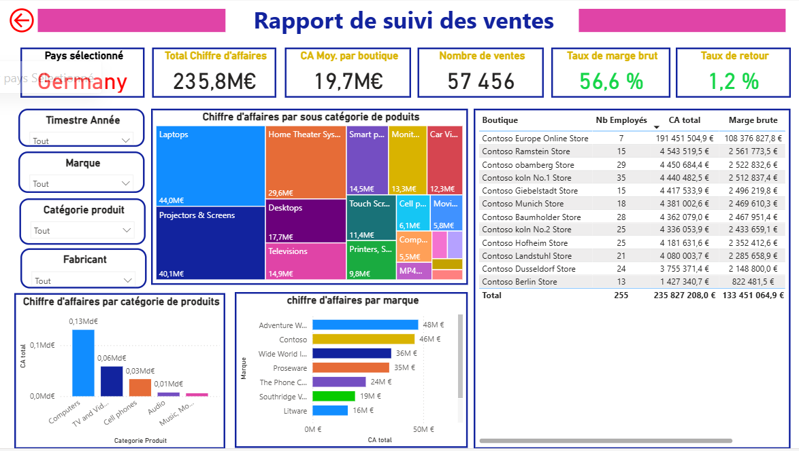

Portfolio
Projets Data
Une sélection de mes projets d'analyse de données et de visualisation

Power BI
Analyse de données commerciales
Tableau de bord Power BI permettant le suivi des performances commerciales et l'analyse du pricing. Inclut des KPIs dynamiques et des analyses prédictives.

R Shiny
Analyse de données de santé
Analyse statistique via R sur des données de santé publique. Visualisations RShiny pour faciliter l'interprétation des résultats.

Power BI
Analyse de données E-commerce
Tableau de bord de pilotage business développé sur Power BI, conçu pour offrir une vision claire et interactive de la performance commerciale.